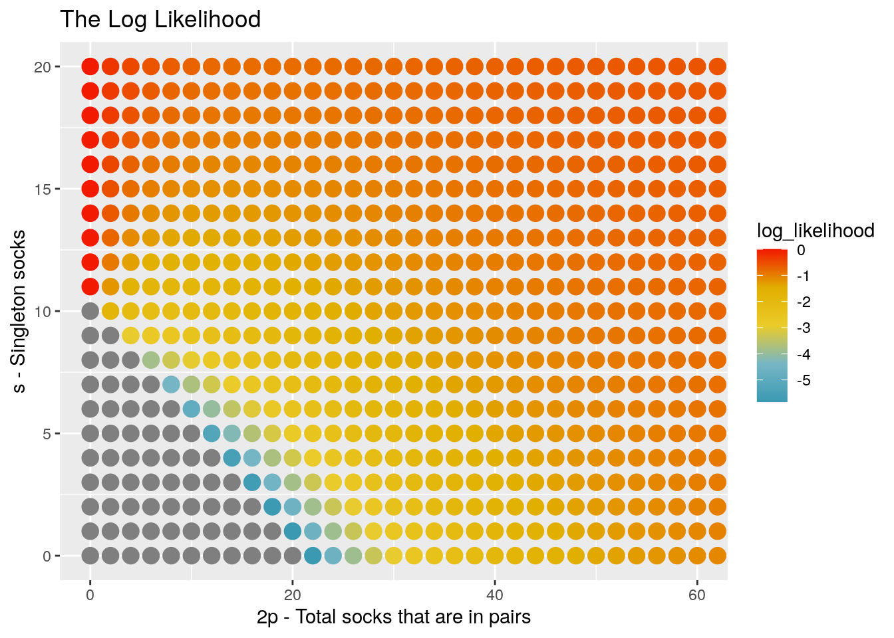

A natural approach to real world problem solving is to ask which situation was the most likely to have produced some observed event. In our context: how many socks would there have to have been in the washing machine for us to have the greatest chance of the first 11 socks being distinct?
To answer this mathematically, we could look to enumerate the probability of seeing 11 distinct socks for all possible number of socks in the wash, and then choose the number which assigned the greatest probability, eg. for which the event was most likely.
The above heuristic contains two parts:
it gives the intuition for the mathematical definition of the likelihood function, which we formally introduce below,
and justifies the method of Maximum Likelihood Estimation, which will be our first stopping point before conducting a Bayesian analysis in future sections.
We will refer to the unknown total number of socks as \(n\), and generalise the problem to the situation where \(k\) distinct socks have been observed.
Further, it will be useful to break down \(n\) into the number of pairs of socks, \(p\), and the number of singleton socks, \(s\), so that
\[n = 2p + s.\]
\[L(p,s|k) = \begin{cases} \binom{2p + s}{k}^{-1} \sum_{j=0}^k 2^{k-j} \binom{s}{j} \binom{p}{k-j} & \text{if } k \leq p + s, \\ 0 & \text{else.} \end{cases} \]
Sketch Proof
The likelihood for the sock problem can be identified as the proportion of all ways of choosing \(k\) socks from \(p\) pairs and \(s\) singletons, for which the \(k\) socks are distinct.
As a starting point, note that if \(k > p + s\) then it is impossible for us to have \(k\) different socks, so the below considers the case \(0 \leq k \leq p + s\).
The denominator is the total number of ways to choose \(k\) socks from a total of \(2p+s\), without replacement. This is known to be given by the binomial coefficient
\[\binom{2p + s}{k}\]
To calculate the numerator, the number of ways to choose \(k\) distinct socks, we first condition on the number \(j\) that are singletons. That is: we ask for the number of ways to choose \(j\) of the \(s\) singletons, and \((k-j)\) distinct socks from the pairs.
The first of the two is again simply the binomial coefficient \(\binom{s}{j}\); for the later we note that there are \(p\) distinct types of socks in the pairs and we want \((k-j)\) distinct types, which is \(\binom{p}{k-j}\). But since for each type there were two possible socks to choose from, we need to multiply this by \(2^{k-j}\).
Combining the above, and summing over the possible values \(0 \leq j \leq k\) we have
\[ \sum_{j=0}^k 2^{k-j}\binom{s}{j}\binom{p}{k-j}.\]Deriving combinatorial expressions can be particularly prone to errors, so we will want to carry out some sanity checks to ensure the formula above feels right.
Example
In the case of small values of \(k,p,s\) it is possible to list all the possible combinations by hand: from which we can check the formula.
Consider the case where \(p = 1, s = 1\) for a total of \(3\) socks. In this case the denominator in the formula above is \(\binom{3}{2} = 3\), whilst the numerator is \(2\binom{1}{1}\binom{1}{1} = 2\) indicating that the likelihood of choosing two distinct socks is \(2/3\).
To check this we can directly enumerate the possible combinations. Denoting the socks \(S, P_1, P_2\) where \(S\) is the singleton sock and \(P_1,P_2\) make a pair, the possible combinations of two socks are: \(\{S,P_1\}, \{S, P_2\}, \{P_1, P_2\}\), as per the formula we see that two of the three possibilities result in sampling distinct socks.
Example
The example above is the smallest non-trivial example, so we also want to test our formula on a harder scenario. To test a case where it is not realistic to enumerate the possibilities by hand, we can turn to sampling.
We consider the case \(p = 3, s = 4\) for a total of \(n = 10\) socks, and choose \(k = 4\). This time our formula indicates that there are a total of \(\binom{10}{4} = 210\) different combinations, of which the number we calculate as having \(4\) distinct socks is:
\[2^{3}\binom{4}{1}\binom{3}{3} + 2^{2}\binom{4}{2}\binom{3}{2} + 2^{1}\binom{4}{3}\binom{3}{1} + 2^{0}\binom{4}{4}\binom{3}{0} = 129.\]
Together these imply that the probability of drawing \(4\) distinct socks is \(129/210 \approx 0.61\).
We now validate this calculation by sampling directly from the possible combinations:
Sampling Code
set.seed(14142)
p <- 3
s <- 4
k <- 4
# vector of all the socks that are considered to be in the machine.
all_socks <- c(rep(paste0("P",1:p), 2), paste0("S", 1:s))
# a function to sample k socks without replacement from all_socks
sample_socks <- function(all_socks, k) sample(x = all_socks, size = k, replace = FALSE)
# a function which identifies whether all the socks in a sample are distinct (return 1,
# else returns 0)
distinct_sample <- function(sock_sample){ 1 * (length(sock_sample) == length(unique(sock_sample)))}
# to estimate the frequency that the socks are distinct, we will construct
# multiple samples we refer to each as a draw (from the distribution). In total
# we'll make 100,000 independent draws.
draws <- tibble(
# number each draw
draw_id = 1:100000,
) %>%
mutate(
# generate the samples
draw = pmap(., ~sample_socks(all_socks, k)),
# the number of different socks in the draw
all_distinct = map(draw, ~distinct_sample(.)) %>% unlist #length(unique(.))) %>% unlist
)
# summary table
summarise_draws <- tribble(
~var, ~value,
"No. Draws", nrow(draws) %>% digits(0, big.mark = ",") %>% as.character(),
"No. All Distinct", sum(draws$all_distinct) %>% digits(0, big.mark = ",") %>% as.character(),
"Prob. All Distinct", (sum(draws$all_distinct)/nrow(draws)) %>% digits(3) %>% as.character()
) %>%
kable( col.names = c("Summary", ""), align = "lr") %>%
kable_styling(
bootstrap_options = "condensed",
full_width = FALSE,
position = "center",
font_size = 14
)| Summary | |
|---|---|
| No. Draws | 100,000 |
| No. All Distinct | 61,480 |
| Prob. All Distinct | 0.615 |
Before moving to performing calculations with the likelihood, we briefly comment on how to implement it computationally.
As a first step, it is common in calculations to work with the logarithm of the likelihood (the log-likelihood) - this is a computational trick to avoid rounding errors which arise when working with very small probabilities.
In particular, our likelihood is written in terms of binomial coefficients which themselves are defined in terms of the factorial function \(n! = 1 \times 2 \times \cdots \times n\). When working on the logarithmic scale this becomes a summation:
\[\log n! = \sum_{j=1}^n j = \frac12 n(n+1).\] Denoting the logarithm of binomial coefficient by \(l(n,m) = \log \binom{n}{m}\), we can write the logarithm of the summation term from the likelihood as:
\[f_j = f_j(p,s|k) = (k-j) \log(2) + l(s,j) + l(p,k-j) - l(2p + s, k),\]
and the log likelihood can be written as:
\[\log L(p,s|k) = \log \left( \sum_{j=0}^k \exp (f_j) \right).\]
The presence of the exponential in the formula risks undoing the efforts we have gone to in working with the logarithms. To maintain computational tractability we employ the Log-sum-exp trick: let \(f^* = \max_j f_j,\) then the trick is to note the formula above is equivalent to
\[\log L(p,s|k) = f^* + \log \left( \sum_{j=0}^k \exp \bigg( f_j - f^* \bigg) \right).\]Sketch Proof
Note that for any constant \(a\) \[\exp(f_1) + \cdots + \exp(f_k) = \exp(a) \bigg( \exp(f_1 - a) + \cdots + \exp(f_k - a) \bigg),\] and so taking logarithms gives:
Note that since \(f^*\) is on the log scale, although it may be the largest term it will still be computationally tractable. Each term to be exponentiated is now guaranteed to be less than \(1\), and so within machine precision.
Implementation Code
socks_ll <- function(p,s,k){
# it is not possible to choose more than p+s distinct socks
if(k > p + s) return(-Inf)
# log likelihood terms for the log-sum-exp trick.
f <- purrr::map(0:k, function(j){
(k-j)*log(2) + lchoose(s,j) +lchoose(p,k-j) - lchoose(2*p + s,k)
})
# the log likelihood
ll <- matrixStats::logSumExp(f)
return(ll)
}
# socks_ll(p = 3, s = 4, k = 4)
socks_likelihood_grid <- function(p_max,s_max,k, prior = NULL){
grid <- crossing(p = 0:p_max, s = 0:s_max, k = k) %>%
rowwise() %>%
mutate(
ll = socks_ll(p,s,k)
)
return(grid)
}
To motivate the need for a Bayesian analysis of the sock problem, we first consider the limitations of a maximum likelihood analysis.
Recall that given the observed data (\(k\) distinct socks), the maximum likelihood estimate for \((p,s)\) is the pair for which the observed data was most likely to have occurred: i.e. the values that maximize \(L(p,s|k)\). Note that whilst \(L\) denotes the log-likelihood, its maximum is achieved at the same point as the likelihood since it is a monotonic increasing function.
Computationally we cannot enumerate all possible combinations of \(p,s\), however evaluating the log-likelihood on a range of values is sufficient to indicate the potential challenges of a MLE analysis.
MLE Code
mle <- socks_likelihood_grid(p_max = 30, s_max = 20, k = 11)
mle_plot <- grid_plot(mle, 2*p,s,ll) +
labs(
title = "The log likelihood",
x = "2p - Total socks that are in pairs",
y = "s - Singleton socks",
colour = "Log Likelihood"
)
The plot indicates that the likelihood is maximized at values of \(p = 0\), for \(s \geq 11\). This should not be a surprise, since if all of the socks are distinct (so long as \(s > k\)) then there is a probability of \(1\) that we will choose distinct socks.
Further to this we note that away from this trivial case, the likelihood grows with the number of socks: as an example, even in the case that we considered no singleton socks, then as \(p \rightarrow \infty\) the likelihood converges to \(1\). Again this is to be expected as if you have many pairs to choose, the chances that you would both socks from a pair is low.
A potential resolution to these limitations would be to introduce hard constraints on the problem: for instance enforcing a strict limit to the size of the washing machine capacity, and hence capping the potential values of \(s,\, p\).
Example
Suppose for simplicity we make the assumption that there are no singleton socks at all, forcing \(s = 0\), and that at most the washing machine capacity could hold \(P\) pairs of socks (eg \(P = 60\)).
From the logic above, and evident in the plot, in this constrained model the likelihood will be maximised at the boundary value \(P\), eg. the most likely scenario (under this model) is that Karl Broman completely filled his machine with socks.
This demonstrates the level of sensitivity that a MLE approach would have to setting any hard constraints - in fact in this example the constraint determines the estimate in a trivial way.
In the next section we introduce the soften the constraint by introducing a distribution over the range of possible values that \(s,\,p\) can take, and demonstrate how this can be combined with the likelihood to derive estimates for the sock problem.